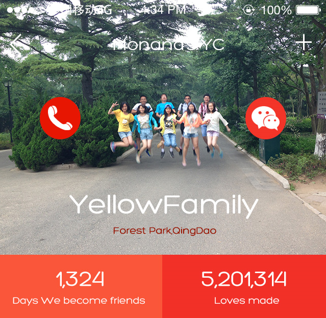
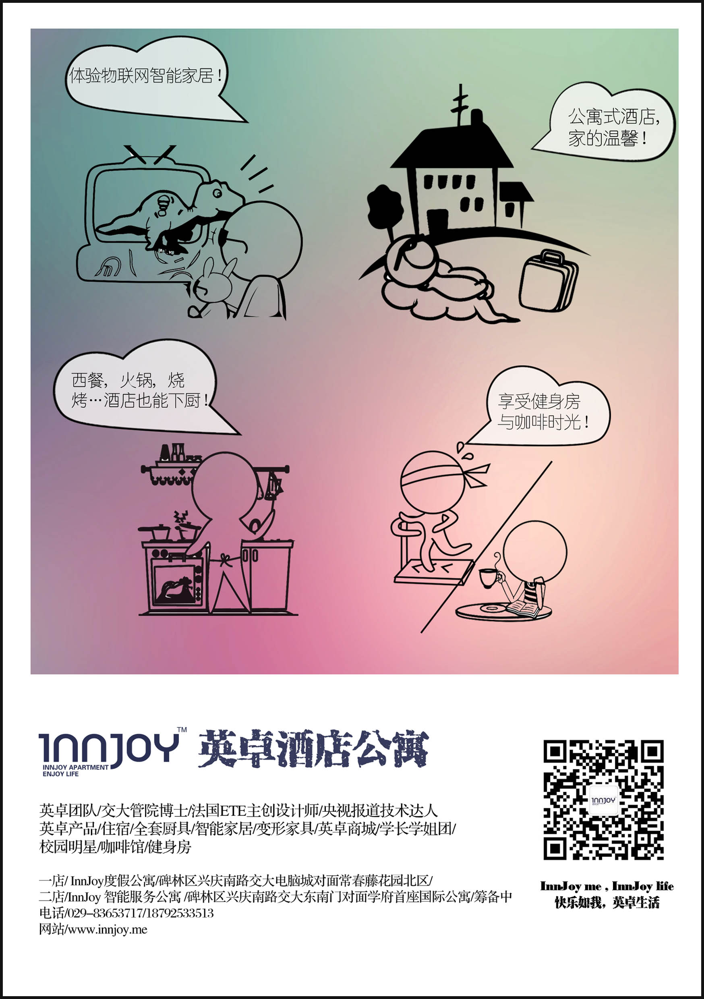

Monana He (贺默南)
hemonan AT vip.163.com

I'm an Automation Science and Technology 2018 new graduates from Xi'an Jiaotong University, with my interest focus on Machine Learning, Natural Language Processing and Quantitative Investment.
· Experiences
2016 - Present | Research Students at Institute of Artificial Intelligence and Robotics, research in Computer Vision, supervised by Xuguang Lan
July 2017 | Research Assistant at College of Business in City University of Hong Kong, research about social media analyst in Quantitive Investment(Futher details descrpited in my projects)
August 2017 | Intern in futures group at GuanTian Capital, the biggest PE in Xi'an City. Develop back-end programming for Quantitative Trading System.
· Capacity & Interests
Runtimes & Libraries: .NET CLR (C#), STL (C++), JVM (Java)
Back-end Technologies: Spring MVC
Miscellaneous: Distributed Crawler/Data Mining: Redis, Spark, Python, SQL,
Deep learning: Tensorflow, Web: Html5, CSS, UI design/Graphic design: Photoshop, illustrator,
Game Develop: Unity, Linux/Windows kernel, Embedded
Projects
· Biometrics
Integrating regulatory features data for prediction of functional disease-associated SNPs , Apr. 2017. [paper]
Cooperating with College of Life Sciences, we developed a pipeline named functional disease-associated SNPs prediction (FDSP), to identify novel susceptibility loci for complex diseases based on the interpretation of the functional features for known disease-associated variants with machine learning. Related paper is under reviewing. I am responsible for all the programes design and encapsulation.
Diagnosis of schizophrenia by using multi-layer RBMs deep networks , Oct. 2016.
Cooperating with College of Life Sciences and College of Mathematics and Statistics, use multi-layer RBMs deep networks, apply deep analysis of more than 12,000 potentially pathogenic gene loci and phenotype, predict possible genotypes in patients suffering from schizophrenia.
· Quantitative Investment

Crowds Voice Analysis: Stock Selection based on NLP Transmitted Through Chinese famous Social Media websites , July. 2017 - Present
Cooperated with study group from City University of HongKong. Make a deep analysis through Chinese financial websites Xueqiu.com Use Python and Javascript crawlers to get related data, including daily news, articles, commentaries, website celebrities with many fans, portfolios with high attention. Use Nature language processing and financial technic to analyze. Build multi-factor selected units strategy for Investment Company.

Auto real-time Trading Systems development for commodity futures in Guantian PE , June. 2017.
While being an intern at Quantity technic group in Guantian PE, I develop a programme trading system using CTP and wind API. As a group learder, I am through all the development core process.
· Computer Vision and Pattern Recognition
Human behavior detection recognition based on Recurrent Nerual Networks , Sep. 2016.
Use Kinect to make feature detection of human skeleton, capture the spatial coordinate transformation. It aims to recognize the sense of human behavior and focus. We use LSTM to better explore the action type and temporal localization information.

On using wearable devices to steal your passwords: A fuzzy inference approach[slide] , Apr. 2017.
The password entry process often occurs on the keyboard. We collected the acceleration data of the sensor we wore and extracted the features. We use the feature set as a 4-layer neural network input, training to obtain high-performance artificial neural network classifier to identify the user input password sequence.
· Miscellaneous
UI design for Mobile Application , Apr. 2015.
I take an interest in Graphic Design, with a proficient skill in Design Software such as Photoshop and Illustrator. Here show some my works.



